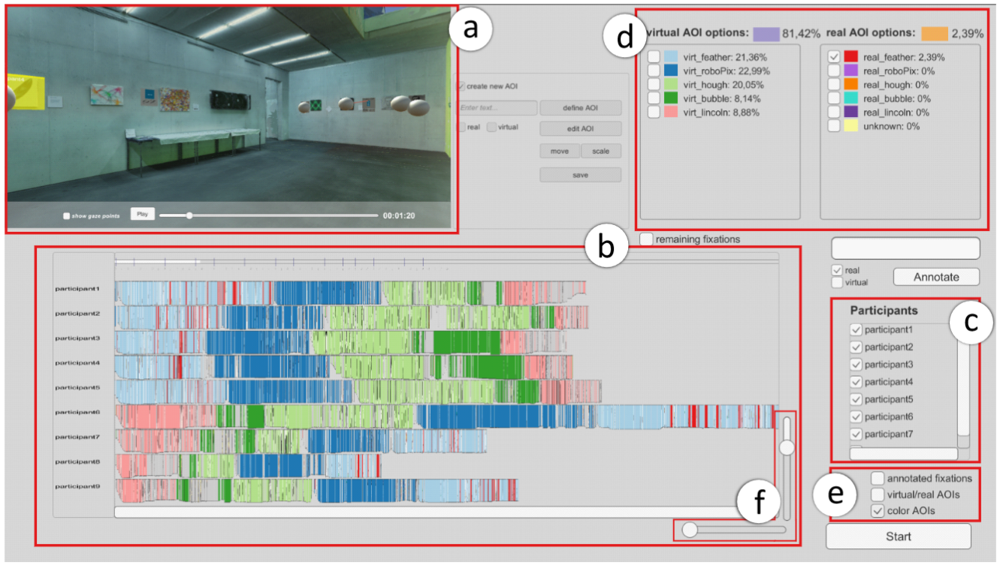

Visual Gaze Labeling for Augmented Reality Studies
(opens in new tab)

Venue. EuroVis (2023)
Abstract. Augmented Reality (AR) provides new ways for situated visualization and human-computer interaction in physical environments. Current evaluation procedures for AR applications rely primarily on questionnaires and interviews, providing qualitative means to assess usability and task solution strategies. Eye tracking extends these existing evaluation methodologies by providing indicators for visual attention to virtual and real elements in the environment. However, the analysis of viewing behavior, especially the comparison of multiple participants, is difficult to achieve in AR. Specifically, the definition of areas of interest (AOIs), which is often a prerequisite for such analysis, is cumbersome and tedious with existing approaches. To address this issue, we present a new visualization approach to define AOIs, label fixations, and investigate the resulting annotated scanpaths. Our approach utilizes automatic annotation of gaze on virtual objects and an image-based approach that also considers spatial context for the manual annotation of objects in the real world. Our results show, that with our approach, eye tracking data from AR scenes can be annotated and analyzed flexibly with respect to data aspects and annotation strategies.
Link to this page: